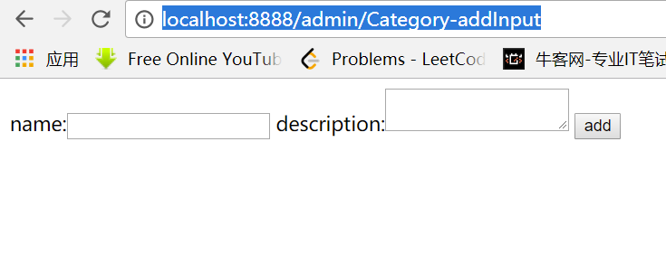

第五十四课.
设计约定（编码规定）
a) 原则：简单就是美
b) 库名：项目名
c) 表的命名：_Model名
d) 字段：保持和属性名一致（尽量不要起名和数据库命名冲突）
e) 用层来划分包 com.bjsxt.bbs.action model(bean) service DTO
f) Action XXXXAction(Action以Action命名结尾)
g) *_*
h) /
i) /admin
j) package “action” adminAction
第五十五课.
项目开发顺序-以BBS2009的名义
- 建立界面原型
- 建立Struts.xml
a) 确定namespace
b）确定package
c） 确定Action 的名称 空的方法
d） 确定 Result
e） 讲界面原型页面进行 修改 匹配现有设置
f） 测试 - 建立数据库（或者实体类）
- 建立Model层
- 建立Service层（后面讲了Hibernate后再完善）
a) 此时可以使用Junit进行单元测试了 - 着手开发
我们先搭建一个界面原形，直接到一个自己看起来还不错的网站上扒代码，做成我们的前端和后台管理页面，效果是这样的：
前台页面：
后台管理页面：
第五十六课. BBS2009 初步了解ExtJS
我们先了解一下ext框架。创建一个项目ext3.0，直接把ext3.0的包整个粘过来：
访问网址：
发现在这个页面下，可以直接去学习ext的API文档。
我们将ext包引入我们的博客，用来给我们的网站提供前端支持。
比如我们在index.html中来显示一个alert，就可以直接用ext中的API：
访问一下：
发现可以调用我们ext框架的API
我们来研究一下界面整体布局：
在index.html中定义一个accordion变量，它是一个Ext.Panel，用来装载五个item：
|
|
item1:
它也是一个Ext.Panel，用来装载两个item
剩下几个item都是相似的。
整体布局：
左边是accordion，右边是tabPable:
其中autoLoad是一个自动加载过程，所以我们可以看到Category_add.jsp被自动加载了进来：
activeTab : 0是激活第一个tab
添加一个panel的方法：
如果没有与点击的按钮id相同的tab，那么就新生成并且激活一个tab，如果有了，就不创建新的了。
html : '<iframe width=100% height=100% src=' + btn.id + ' />'这一句，是将tab的页面里写了一个iframe，这个iframe里面可以映射我们想要的页面。
第五十七课. 建立项目框架1
前面我们已经把界面设计好了，下面我就建立struts.xml文件
前台的package：
|
|
这个包的名字叫front，命名空间是在/下面，继承默认配置包，Action名字叫Category_list，并且设置为默认的Action，在没有url追加的情况下默认执行这个Action。Action类我们先添加一个list方法：
这样我们访问http://localhost:8888
的时候，就会返回index.jsp这个页面了。
我们尝试访问http://localhost:8888/admin/Category_list
发现也会访问成功
比如再前面追加一些前缀：
也可以访问成功
说明一个结论：
一个namespace中如果没有对应的Category_list的时候，它会去父亲的namespace中找。
我们在struts.xml中加入如下配置：
在这个package里，我们定义了自己的命名空间和action名字，所以访问结果如下：
可以看到我们自己写的Category_list可以被顺利访问到了。
有了这么一次实验的成功，我们可以使用通配符来完成其他action的跳转，修改上面的package（由于文件命名中带下划线的有些bug，所以改成用-）：
我们将文件名字也做相应修改：
访问一下：
成功！
我们来完善我们的Category-list.jsp，使这个jsp中包括跳转到添加目录、更新目录和删除目录的界面上去：
完善Action（比如执行admin/Category-addInput时候，由于struts.xml是：
所以method是add，但是我们之前的CategoryAction中没有add方法，所以我们完善我们的CategoryAction类：
重新部署tomcat，再来运行一下这个链接：
可以顺利跳转过去。
但是我们的目标，是在点击“添加Catgegory”按钮之后，跳转到admin/Category-update-input.jsp里面，所以这个我们还需要考虑完善。
第五十八课. 建立项目框架2
为了解决上面的问题，我们在我们的Action类中添加两个方法：
两个返回值都是INPUT，然后我们在我们的struts.xml中进行配置：
可以看到这一次的struts.xml中加入了针对INPUT返回值的result，比如我们访问“添加目录”，就会访问http://localhost:8888/admin/Category-addInput，然后就会执行Action的addInput方法，返回input以后，我们会显示Category-addInput.jsp，所以我们可以将之前的添加输入文件改名叫Category-addInput.jsp:
我们来看一下效果：

成功！
为了使add之后显示一个提示添加成功的页面，我们这么写：
最后form执行post请求后，跳转到Category-add这个Action。
这样我们的项目框架就搭好了。
再来回顾一下整体流程：
- 建立界面原型
- 建立Struts.xml
a) 确定namespace
b）确定package
c） 确定Action 的名称 空的方法
d） 确定 Result
e） 讲界面原型页面进行修改，匹配现有设置
f） 测试
第五十九课. 建立数据库
首先我们来创建我们的数据库和表：
这样就创建好了我们的数据库了
我们为了便于后续开发人员创建数据库，可以将这个做成一个sql文件，放在项目的sql文件夹下。
第六十课. 建立Model与Service层1.
先建立Model：
定义Category：
这样我们的model就建立好了。
接下来建立我们的service，先搭好service的框架：
代码：
再创建连接数据库需要的类：
第六十二课. 建立Model与Service层2.
上面建立了数据库，建立了使用数据库的各种接口，并且搭好了service的框架，下面我们就要来使用这些接口来完善service：
通过util.DB中的接口，我们实现了service中对于目录的增删改查。
第六十三课. 实现页面与Action 1.
这一节中，我们将Action和Service联系起来，使得我们在前台进行增删改查的操作时，可以直接影响到数据库。
修改CategoryAction.java:
在struts加入index的action：
修改index.html文件，因为原来的index.html中category按钮映射到的id是：Category_list，现在我们将其改成符合我们的id：Category-list：
|
|
现在我们就将前端和后台数据库联系起来了，来实验一下：
页面显示添加成功。现在我们来看数据库里的数据，是否添加成功：
成功！
第六十四课. 实现页面与Action 2.
为了让Category列表可以顺利将数据库已经插入的数据展示在前台页面，我们在Category-list.jsp中增加代码：
这样，我们就将数据库中的数据进行遍历并且予以展示了。
增加一组数据，看一下效果：
然后我们来增加删除的操作：
Category-list.jsp：
在CategoryService.java中，在list()方法里增加一条设置id的语句：
这样我们就实现了对列表的删除操作：
点第二个：
查看列表:
成功了。
现在有了增、查、删，我们最后需要完成的是对数据的改操作：
先在Category-list.jsp中加入对修改的支持：
在CategoryService.java中加入，从而创建了一个可以传到前台的内容：
修改CategoryAction.java，添加了updateInput方法：
struts收到input的返回值，所以直接转到Category-updateInput.jsp文件，这时候要修改的category就已经准备好了。
编写Category-updateInput.jsp：
上面修改部分不包括id，所以id放在hidden的input里面。
提交以后执行admin/Category-update，所以在struts.xml中就会匹配到CategoryAction中的update方法，执行数据库的update操作，这样就把一条数据修改了。
来看一下效果：
修改，把a a改成a b：
提交以后效果：
修改成功！
第六十五课. 总结
项目开发顺序-以BBS2009的名义
- 建立界面原型
- 建立Struts.xml
a) 确定namespace
b）确定package
c） 确定Action 的名称 空的方法
d） 确定 Result
e） 讲界面原型页面进行 修改 匹配现有设置
f） 测试 - 建立数据库（或者实体类）
- 建立Model层
- 建立Service层（后面讲了Hibernate后再完善）
a) 此时可以使用Junit进行单元测试了 - 着手开发